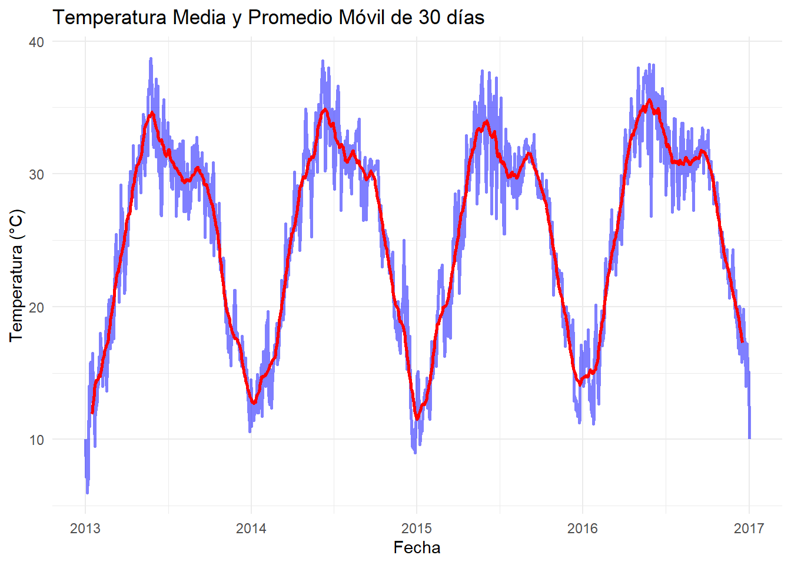
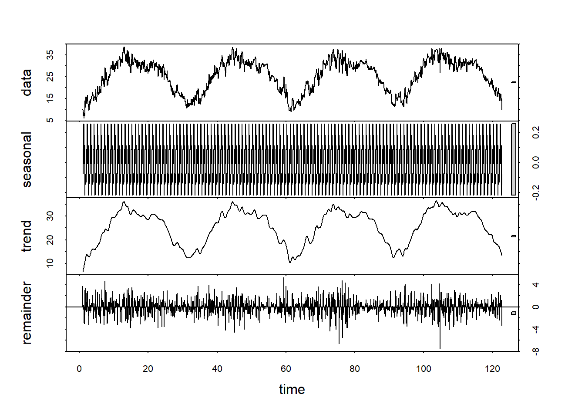

Chapter 3 Modulo 1 - Unidad 2
3.1 Ajuste de los datos
Ajustamos el formato fecha
## [1] "2013-01-01" "2013-01-02" "2013-01-03" "2013-01-04" "2013-01-05"
## [6] "2013-01-06"library(tidyverse)
library(lubridate)
# Convertir la columna de fecha a formato de fecha usando ymd()
data$date <- ymd(data$date)
# Validar primeros registros
head(data)## date meantemp humidity wind_speed meanpressure
## 1 2013-01-01 10.000000 84.50000 0.000000 1015.667
## 2 2013-01-02 7.400000 92.00000 2.980000 1017.800
## 3 2013-01-03 7.166667 87.00000 4.633333 1018.667
## 4 2013-01-04 8.666667 71.33333 1.233333 1017.167
## 5 2013-01-05 6.000000 86.83333 3.700000 1016.500
## 6 2013-01-06 7.000000 82.80000 1.480000 1018.000## 'data.frame': 1462 obs. of 5 variables:
## $ date : Date, format: "2013-01-01" "2013-01-02" ...
## $ meantemp : num 10 7.4 7.17 8.67 6 ...
## $ humidity : num 84.5 92 87 71.3 86.8 ...
## $ wind_speed : num 0 2.98 4.63 1.23 3.7 ...
## $ meanpressure: num 1016 1018 1019 1017 1016 ...3.2 Análiis del promedio movil
##
## Attaching package: 'zoo'## The following objects are masked from 'package:base':
##
## as.Date, as.Date.numeric# Calcular el promedio móvil de 30 días para la temperatura media
data$MovingAvg <- rollmean(data$meantemp, 30, fill = NA, align = "center")
# Utilizar ggplot2 para visualizar la temperatura media y su promedio móvil
library(ggplot2)
ggplot(data, aes(x = date)) +
geom_line(aes(y = meantemp), color = "blue", size = 1, alpha = 0.5) +
geom_line(aes(y = MovingAvg), color = "red", size = 1) +
labs(title = "Temperatura Media y Promedio Móvil de 30 días",
x = "Fecha", y = "Temperatura (°C)") +
theme_minimal()## Warning: Using `size` aesthetic for lines was deprecated in ggplot2 3.4.0.
## ℹ Please use `linewidth` instead.
## This warning is displayed once every 8 hours.
## Call `lifecycle::last_lifecycle_warnings()` to see where this warning was
## generated.## Warning: Removed 29 rows containing missing values or values outside the scale range
## (`geom_line()`). El gráfico muestra claramente las tendencias subyacentes y suaviza las fluctuaciones diarias, resaltando la estacionalidad marcada en la serie de tiempo. La línea roja del promedio móvil sigue de cerca los picos y valles del gráfico de temperatura original (azul), pero con menos ruido, facilitando la identificación de los períodos más cálidos y fríos del año. Esta suavización ayuda a visualizar la tendencia central de la temperatura a lo largo del tiempo, lo cual es especialmente útil para analizar patrones estacionales y para detectar anomalías o cambios inusuales en el clima que podrían no ser evidentes en los datos diarios.
3.3 Análisis de Rezagos
# Crear rezagos de la temperatura media
data$lag1 <- lag(data$meantemp, 1) # Rezago de un día
data$lag7 <- lag(data$meantemp, 7) # Rezago de una semana
# Visualización de la temperatura con rezagos
ggplot(data, aes(x = date)) +
geom_line(aes(y = meantemp, color = "Temperatura actual"), size = 1) +
geom_line(aes(y = lag1, color = "Rezago 1 día"), size = 1, linetype = "dashed") +
geom_line(aes(y = lag7, color = "Rezago 7 días"), size = 1, linetype = "dotted") +
labs(title = "Temperatura Media y Rezagos",
x = "Fecha", y = "Temperatura (°C)") +
scale_color_manual(values = c("Temperatura actual" = "blue", "Rezago 1 día" = "green", "Rezago 7 días" = "red")) +
theme_minimal()## Warning: Removed 1 row containing missing values or values outside the scale range
## (`geom_line()`).## Warning: Removed 7 rows containing missing values or values outside the scale range
## (`geom_line()`).El gráfico de la temperatura media junto con sus rezagos de 1 día y 7 días ilustra cómo las temperaturas pasadas están estrechamente relacionadas con los valores actuales, lo que sugiere una fuerte autocorrelación diaria y semanal en la serie temporal. La superposición de las líneas de rezago con la temperatura actual muestra que los patrones diarios y semanales son consistentes a lo largo del tiempo, con los rezagos siguiendo muy de cerca la serie principal, especialmente el rezago de un día.
Esto refleja que las temperaturas de días anteriores pueden ser buenos predictores de la temperatura del día siguiente, evidenciando dependencia temporal significativa. Los rezagos de una semana, aunque también siguen de cerca la tendencia principal, muestran una variación ligeramente mayor, indicando que mientras la influencia de los valores pasados persiste a lo largo de la semana, los factores externos o variaciones naturales pueden influir más en la variabilidad a medida que aumenta el intervalo de rezago.
Correlación Rezagos
- Rezago 1 Día
## [1] 0.9740675La correlación entre la temperatura y sus rezagos revela una conexión notablemente fuerte tanto a corto como a mediano plazo. La correlación de 0.974 para el rezago de un día indica que la temperatura de un día específico es casi perfectamente predictiva de la temperatura del día siguiente, reflejando una alta dependencia diaria. Esto es común en variables climáticas como la temperatura, donde las condiciones de un día tienden a ser similares al siguiente, a menos que ocurran cambios meteorológicos significativos.
* Rezago 7 Día
## [1] 0.9161794La correlación de 0.916 para el rezago de siete días sigue siendo muy alta, lo que sugiere que la temperatura también tiene una fuerte memoria semanal. Aunque la influencia se atenúa ligeramente con el tiempo, el valor sigue siendo lo suficientemente alto como para indicar que la temperatura de una semana puede predecir bastante bien la temperatura de la semana siguiente. Esto puede ser útil para pronósticos a corto plazo, ya que muestra que las temperaturas tienden a mantenerse relativamente estables o seguir patrones predecibles a lo largo de una semana.
3.4 Análisis de Estacionalidad
Análisis estacional
# Extraer el mes de cada fecha para análisis estacional
data$month <- month(data$date)
# Calcular la media mensual de la temperatura
monthly_avg <- data %>%
group_by(month) %>%
summarise(mean_temp = mean(meantemp, na.rm = TRUE))
# Ordenar los resultados por mes para correcta visualización
monthly_avg <- monthly_avg %>%
arrange(month)
# Visualizar la estacionalidad de la temperatura media
ggplot(monthly_avg, aes(x = month, y = mean_temp)) +
geom_line(group = 1, color = "blue") +
geom_point(color = "red") +
scale_x_continuous(breaks = 1:12, labels = c("Ene", "Feb", "Mar", "Abr", "May", "Jun", "Jul", "Ago", "Sep", "Oct", "Nov", "Dic")) +
labs(title = "Estacionalidad de la Temperatura Media por Mes",
x = "Mes", y = "Temperatura Media (°C)") +
theme_minimal()El gráfico que muestra la estacionalidad de la temperatura media por mes en Delhi ilustra claramente el patrón estacional típico en la región. Se observa un aumento pronunciado en las temperaturas desde enero, alcanzando su punto máximo en los meses de verano de mayo a julio, donde las temperaturas se mantienen en valores altos. Posteriormente, las temperaturas comienzan a disminuir gradualmente hacia el final del año.
Este patrón refleja las características climáticas de un clima subtropical, donde los veranos son calurosos y los inviernos relativamente fríos. La gráfica destaca los meses más cálidos claramente, lo que puede ser crucial para la planificación en sectores como la agricultura, la salud pública y la gestión de recursos energéticos, ya que estos meses pueden requerir medidas adicionales debido al calor extremo. Además, el marcado descenso hacia finales de año sugiere que las condiciones se vuelven considerablemente más frescas, lo que también podría tener implicaciones significativas en varias actividades y servicios.
Descomposición estacional
# Usar la función stl() para descomposición estacional
data_ts <- ts(data$meantemp, frequency = 12) # Asumiendo datos mensuales
result_stl <- stl(data_ts, s.window = "periodic")
# Visualizar los componentes de la descomposición
plot(result_stl)
Análisis de los Componentes:
Componente de Datos: Muestra la serie temporal original de la temperatura media. Esta visualización es útil para comparar directamente con los componentes extraídos y ver cómo se componen los datos originales.
Componente Estacional: Claramente visible, este componente captura la variabilidad estacional de la serie, mostrando patrones repetitivos que corresponden a las fluctuaciones estacionales anuales. Este patrón estacional es muy regular, indicando fuertes variaciones estacionales que son típicas en los datos climáticos, donde las temperaturas cambian según la estación.
Componente de Tendencia: Este gráfico muestra la tendencia subyacente en los datos, eliminando los efectos de la estacionalidad y otros ruidos. Observamos un movimiento suave que revela los cambios a largo plazo en la temperatura, como un aumento o disminución gradual. Esto es crucial para comprender las tendencias climáticas a lo largo del tiempo, incluyendo el calentamiento o enfriamiento en la región de estudio.
Componente de Residuo: Los residuos representan lo que queda después de extraer los componentes de tendencia y estacionalidad. Estos pueden incluir efectos aleatorios y anomalías no capturadas por los modelos de estacionalidad y tendencia. El gráfico de residuos parece ser bastante “ruidoso”, lo cual es típico, indicando que hay variaciones en los datos que no se ajustan a patrones estacionales simples o tendencias suaves.